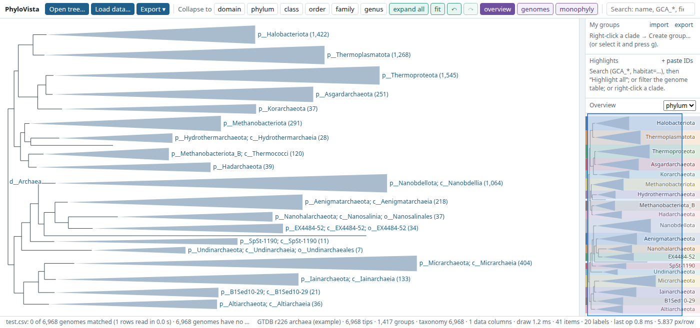

Tree viewer (name to be decided) demo
A fast, ARB-style phylogenetic tree explorer that runs entirely in your browser. Fold large microbial trees by taxonomy, annotate and shade clades, search and highlight by metadata, compare taxonomies, draw rectangular, circular or unrooted trees and export publication figures — on trees as large as the full GTDB bacterial tree.
Nothing is uploaded: your files are read by your browser and stay on your computer. No tracking.

Demo datasets
Use your own tree and data
Open the viewer (empty, or the single file offline) and load your files with the buttons at the top left, or drag and drop them onto the page. Files never leave your computer.
-
Open tree… — a Newick tree: IQ-TREE
.treefile, FastTree, RAxML, GTDB-Tkde_novo_wfor GTDB trees (.nwk,.tree,.tre,.txt). Support values and GTDB-style internal labels such as'100.0:p__Bacillota'are understood. Trees with 100,000+ genomes are fine. -
Load data… — a table about your genomes (TSV or CSV, optionally
.gz). One column must hold the names used as tips in the tree; the viewer finds it (e.g.genome,accession,user_genome) and shows how many genomes matched. Accessions match with or without the GTDBRS_/GB_prefix and version, and assembly file names such asGCA_000005845.2_ASM584v2_genomicmatch too. Pick the columns you want and, if the table has one, the column to use as taxonomy (Taxonomy from).genome gtdb_taxonomy habitat completeness bin_001 d__Bacteria;p__Chloroflexota;c__Anaerolineae;o__;f__;g__;s__ soil 92.4 GCA_000005845.2 d__Bacteria;p__Pseudomonadota;c__Gammaproteobacteria;… gut 100
Tables the viewer recognises:- GTDB taxonomy file (
bac120_taxonomy_r232.tsv: accession + lineage) — becomes the taxonomy. - GTDB-Tk summary (
gtdbtk.bac120.summary.tsv) — its classification becomes the taxonomy; closest reference, ANI and RED go to the table. - GTDB metadata (
bac120_metadata_r232.tsv.gz, 300 MB) — streamed; choose the columns. - Your own metadata — any columns: habitat, quality, traits… Use them in searches
(
habitat=soil,completeness>=90), in the genome table and as trait strips. - Feature tables — genome + feature (e.g. KEGG KOs from DRAM), or features × genomes — for presence / absence strips.
- iTOL annotation files — colour strips (kept in their colours), clade colours and ranges, text labels and
collapse lists;
tipA|tipBreferences work as in iTOL.
o__;f__are fine: those genomes are simply unassigned at that rank. - GTDB taxonomy file (
-
Fold, search, annotate. The rank buttons fold the tree by taxonomy; right-click any clade for more. Your own
groups and edited fields are kept in this browser. In the genomes table you can correct or extend the
taxonomy: double-click a Taxonomy cell to edit one lineage, or set one rank (e.g.
o__MyOrder) for every listed genome, then download it with ⤓ taxonomy (GTDB format). Everything here can be undone with⌘Z/Ctrl+Z. - Compare your tree with a taxonomy in the monophyly tab: it lists the taxa your tree splits, how badly (piece sizes, genomes outside the main piece, support of the separating branches), and highlights the stray genomes. Root the tree first — the tab warns if it looks unrooted and can root it on an outgroup taxon for you. With several taxonomy columns loaded (e.g. GTDB and NCBI), switch between them with compare with.
-
Save your work with Export ▾ → Save session (one
.phylovistafile with tree, data, groups, highlights and folds; reopen it with Open tree…), or export a figure (SVG, PNG, PDF), the re-rooted tree or tables.
Things to try (5 minutes)
- Open the Archaea dataset. It starts folded to phylum. Right-click a phylum → Expand to order; the rest stays folded.
- Press
/and searchg__Methanobrevibacter; press Enter to jump there. - Search
checkm2_completeness>=95 genome_size<1500000and press Shift+Enter to highlight the matches; use ⊙ in the Highlights panel to focus on them. - Open the genomes table, filter it, and try Highlight each value of… ncbi_country.
- Look at the trait strips on the right: hover a cell; fold a clade and see its summary. Open strips to add or remove columns, and try the RED button.
- Right-click a clade → Create group…, give it a name and colour. Then Export ▾ → SVG for a figure.
- Open the NCBI vs GTDB dataset and look at the monophyly report: click highlight or strays next to a split taxon, then switch compare with to
gtdb_taxonomy. - If you have your own tree (Newick) and a table of genomes (TSV/CSV, or a GTDB-Tk summary), try them with Open tree… and Load data….
Feedback
Comments, problems or ideas? Please send them directly to the person who shared this link with you — what you tried, what worked, what was confusing, and whether you would use it for your own work.
Quick reference
Click: select · Double-click: fold/unfold
Shift+click: expand to the next rank
Alt/Option+click: distance to the selection
Right-click: menu (expand to rank, groups, root, export…)
Drag: pan · Wheel: zoom · Shift+wheel: zoom width
f fit · / search · g group · ⌘Z / Ctrl+Z undo